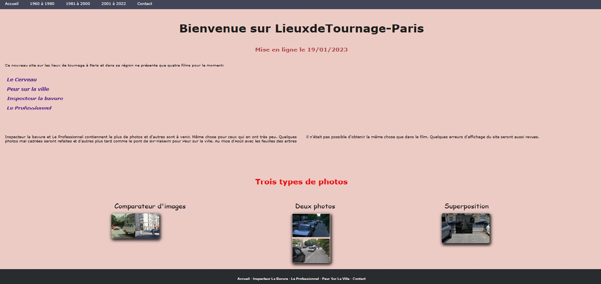

Projets
Lieux de tournage
Site réalisé durant l'été 2022 avant le début de la formation.

Cliquez sur l'image ou ici
La maison du vin
Site vitrine fictif sur les services proposés par un magasin de vente de vin. Texte rédigé par moi-même, pas de copié-collé. Les photos viennent du site pixabay.

Cliquez sur l'image ou ici
Projet de fin de formation
Lieux de tournage de films (projet de fin de formation).
Site avec des captures d'écran de différents films. Le principe est d'aller sur les lieux de tournage et de prendre une photo la plus ressemblante à ce qu'à capturé la caméra. Il y a trois types de photos:
-une photo du film et à droite celle du lieu aujourd'hui.
-une photo du film dont une partie est découpée puis collée dans l'image d'aujourd'hui. Les alignements des bords et autres objets sont respectés entre les deux époques.
- un slider de comparaison. Une barre verticale placée au milieu se déplace de gauche à droite pour découvrir la photo d'aujourd'hui ou celle du film.
Site en cours de construction mais reprend les mêmes principes que le site de l'été 2022, (voir plus haut).